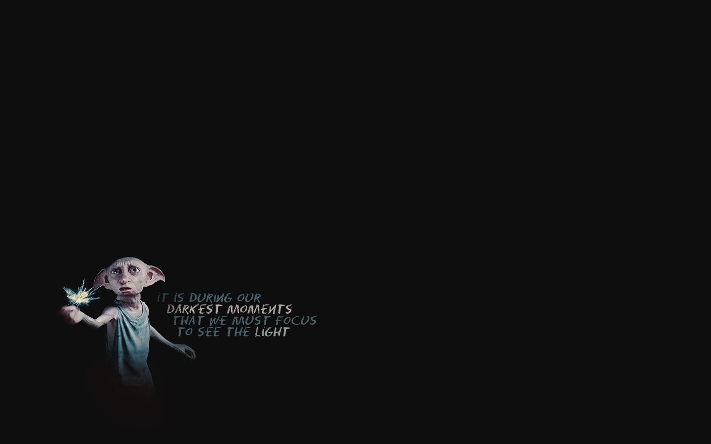
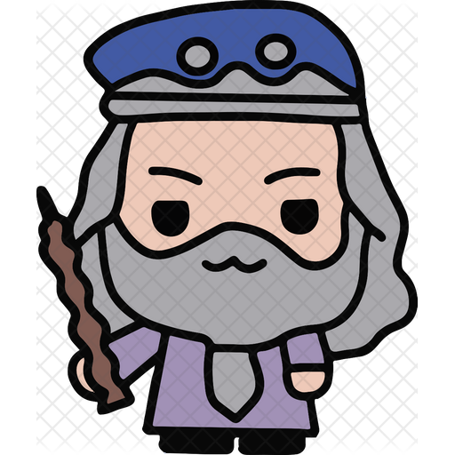

книга 1 "Гарри Поттер и философский камень"
 Глава 1. «Мальчик, который выжил» Мистер и миссис Дурсль проживали в доме номер четыре по Тисовой улице и всегда с гордостью заявляли, что они, слава богу, абсолютно нормальные люди. Уж от кого-кого, а от них никак нельзя было ожидать, чтобы они попали в какую-нибудь странную или загадочную ситуацию. Мистер и миссис Дурсль весьма неодобрительно относились к любым странностям, загадкам и прочей ерунде. Мистер Дурсль возглавлял фирму под названием «Граннингс», которая специализировалась на производстве дрелей. Это был полный мужчина с очень пышными усами и очень короткой шеей. Что же касается миссис Дурсль, она была тощей блондинкой с шеей почти вдвое длиннее, чем положено при ее росте. Однако этот недостаток пришелся ей весьма кстати, поскольку большую часть времени миссис Дурсль следила за соседями и подслушивала их разговоры. А с такой шеей, как у нее, было очень удобно заглядывать за чужие заборы. У мистера и миссис Дурсль был маленький сын по имени Дадли, и, по их мнению, он был самым чудесным ребенком на свете. Семья Дурслей имела все, чего только можно пожелать. Но был у них и один секрет. Причем больше всего на свете они боялись, что кто-нибудь о нем узнает. Дурсли даже представить себе не могли, что с ними будет, если выплывет правда о Поттерах. Миссис Поттер приходилась миссис Дурсль родной сестрой, но они не виделись вот уже несколько лет. Миссис Дурсль даже делала вид, что у нее вовсе нет никакой сестры, потому что сестра и ее никчемный муж были полной противоположностью Дурслям. Дурсли содрогались при одной мысли о том, что скажут соседи, если на Тисовую улицу пожалуют Поттеры. Дурсли знали, что у Поттеров тоже есть маленький сын, но они никогда его не видели. И они категорически не хотели, чтобы их Дадли общался с ребенком таких родителей. Когда во вторник мистер и миссис Дурсль проснулись скучным и серым утром — а именно с этого утра начинается наша история, — ничто, включая покрытое тучами небо, не предвещало, что вскоре по всей стране начнут происходить странные и загадочные вещи. Мистер Дурсль что-то напевал себе под нос, завязывая самый отвратительный из своих галстуков. А миссис Дурсль, с трудом усадив сопротивляющегося и орущего Дадли на высокий детский стульчик, со счастливой улыбкой пересказывала мужу последние сплетни. Никто из них не заметил, как за окном пролетела большая сова-неясыть. В половине девятого мистер Дурсль взял свой портфель, клюнул миссис Дурсль в щеку и попытался на прощанье поцеловать Дадли, но промахнулся, потому что Дадли впал в ярость, что с ним происходило довольно часто. Он раскачивался взад-вперед на стульчике, ловко выуживал из тарелки кашу и заляпывал ею стены.... читать дальше.....
Добро пожаловать в Хогвартс!
Магия только начинается...
Погрузись в Мир Гарри Поттера...
Заметка 1. Одиннадцатилетний мальчик-сирота Гарри Поттер живет в семье своей тетки и даже не подозревает, что он — настоящий волшебник. Но однажды прилетает сова с письмом для него, и жизнь Гарри Поттера изменяется навсегда. Он узнает, что зачислен в Школу чародейства и волшебства, выясняет правду о загадочной смерти своих родителей, а в результате ему удается раскрыть секрет философского камня.
Заметка 2. ШКОЛА ЧАРОДЕЙСТВА И ВОЛШЕБСТВА «ХОГВАРТС» Директор: Альбус Дамблдор (Кавалер ордена Мерлина I степени, Великий волш., Верх, чародей, Президент Международной конфед. магов) Дорогой мистер Поттер! Мы рады проинформировать Вас, что Вам предоставлено место в Школе чародейства и волшебства «Хогвартс». Пожалуйста, ознакомьтесь с приложенным к данному письму списком необходимых книг и предметов. Занятия начинаются 1 сентября. Ждем вашу сову не позднее 31 июля. Искренне Ваша, Минерва МакГонагалл, заместитель директора.
книга 2 "Гарри Поттер и тайная комната"

Глава 1. «День рождения — хуже некуда» В доме № 4 по Тисовой улице во время завтрака разразился очередной скандал. Ранним утром мистер Вернон Дурсль проснулся от громкого уханья совы, долетевшего из комнаты племянника. — Третий раз за неделю! — проревел он, садясь во главе стола. — Вышвырни ее немедленно, коль не умеешь с ней управляться. — Сове в клетке скучно, — в который раз принялся объяснять Гарри. — Она вольная птица. Хорошо бы выпускать ее хоть на ночь. — Я что, по-твоему, идиот? Не знаю, что от сов именно ночью жди неприятностей? Дядя Вернон переглянулся с женой и вытер усы, в которых запутались кусочки яичницы. Гарри хотел что-то возразить, открыл было рот, но кузен Дадли, смачно рыгнув, заявил: — Хочу еще бекона! — Возьми, деточка, со сковородки. Там еще много, — сказала тетя Петунья, и глаза ее от умиления увлажнились. — Кушай на здоровье, пока есть возможность. Школьная еда просто отвратительна! — Глупости, Петунья, — отрезал дядя Вернон. — Я в этой превосходной школе никогда не голодал. Думаю, и нашему сыну еды там хватает. Дадли, очевидно, еды хватало: он был такой толстый, что бока у него свисали с краев табуретки. — Дай мне сковородку, — приказал он Гарри. — Ты забыл волшебное слово, — напомнил ему Гарри. Эта простая фраза подействовала на семейство, как красная тряпка на быка. Дадли ойкнул и с грохотом свалился с табуретки. Миссис Дурсль, вскрикнув, прижала ко рту ладони. А мистер Дурсль вскочил со стула, и на висках у него вздулись синие жилки. — Я только хотел сказать: он забыл слово «пожалуйста», — стал торопливо оправдываться Гарри. — Сколько раз нужно тебе говорить, — брызгая слюной и стуча кулаком по столу, прошипел дядя Вернон, — в моем доме никаких слов на букву «в». Да и как ты посмел учить моего сына! — Но ведь…... читать дальше.....
Заметка 3. В Школе чародейства и волшебства «Хогвартс» происходят тревожные события. Кто-то нападает на учеников школы, и преподаватели подозревают, что это таинственное чудовище, которое скрывается в легендарной Тайной комнате. Гарри Поттер и его друзья разгадывают загадку Тайной комнаты, и теперь Гарри снова предстоит сразиться с лордом Волан-де-Мортом. Сумеет ли он победить на этот раз?
Заметка 4. Гарри взял письмо. Поздравления с днем рождения в нем не было. Вот что он прочитал: Дорогой мистер Поттер! Мы получили донесение, что в месте Вашего проживания сегодня вечером в двадцать один час двенадцать минут было применено заклинание Левитации. Как Вам известно, несовершеннолетним волшебникам не разрешено вне школы использовать приемы чародейства. Еще одна такая провинность, и Вас исключат из вышеупомянутой школы согласно Указу, предусматривающему разумное ограничение волшебства несовершеннолетних (1875 г., параграф С). Также напоминаем, что любой акт волшебства, способный привлечь внимание не умеющего колдовать сообщества (простецы), является серьезным нарушением закона согласно Статусу секретности Международной конфедерации колдунов и магов. Счастливых каникул! Искренне Ваша, Муфалда Хмелкирк Отдел злоупотребления магией Министерство магии».
книга 3 "Гарри Поттер и узник Азкабана"
Глава 1. «Совиная почта»Гарри Поттер — необычный мальчик во всех отношениях. Во-первых, он терпеть не может летние каникулы, во-вторых, любит летом делать уроки, но занимается ночью, когда все спят. А самое главное, Гарри Поттер — волшебник.Было уже заполночь. Гарри лежал на животе, с головой укрывшись одеялом. В одной руке — фонарик, а на подушке — старинная толстая книга в кожаном переплете «История магии» Батильды Бэгшот. Сдвинув брови, Гарри водил по строчкам орлиным пером, искал подходящую цитату для сочинения на тему: «Был ли смысл в XIV веке сжигать ведьм?». Перо задержалось на первой строке параграфа. Ага, кажется, то, что нужно. Гарри поправил очки на носу, поднес к странице фонарик и прочитал:В Средние века люди, в чьих жилах нет волшебной крови (более известные как маглы, или простецы), очень боялись колдовства, но отличать настоящих ведьм и колдунов не умели. Иногда им все же удавалось поймать волшебника, но простецы не знали, что волшебникам огонь не страшен: они умели замораживать огонь и притворяться, что им очень больно. На самом же деле они испытывали не боль, а лишь приятное покалывание по всему телу и теплое дуновение воздуха. Так, Венделина Странная очень любила «гореть» на костре. И чтобы испытать это ни с чем не сравнимое удовольствие, сорок семь раз меняла обличье и предавала себя в руки маглов.Гарри взял перо в зубы и полез под подушку за чернильницей и пергаментом. Осторожно открыв баночку, обмакнул перо и начал писать. Время от времени он прислушивался: вдруг кому из Дурслей приспичит в туалет? Еще услышат скрип пера! Тогда Гарри до конца лета запрут в чулане под лестницей.Дурсли — единственные родственники Гарри. Живут они на Тисовой улице, в доме № 4. Гарри проводит у них летние каникулы, и это время для него сущий ад. Дядя Вернон, тетя Петунья и их сын Дадли — маглы до мозга костей, магии боятся не меньше людей Средневековья. А погибшие родители Гарри были настоящие волшебники, и поэтому их имя в доме под запретом, да и самому Гарри ох как не сладко жилось до недавнего времени.Если с мальчишкой сурово обращаться, не делать поблажек, то, глядишь, он и растеряет свое волшебство, думали Дурсли. Но, как ни старайся, из волшебника простеца не сделаешь. Дурсли были в ужасе: не приведи господи, если кто узнает, что их племянник учится в Школе чародейства и волшебства «Хогвартс»! Какой позор для добропорядочного семейства! Поэтому, когда Гарри приехал на каникулы, все его волшебные принадлежности (учебники, палочку, котел и метлу) Дурсли отправили в чулан под лестницей. А еще запретили ему разговаривать с соседями.... читать дальше.....
Заметка 5.
Двенадцать долгих лет в Азкабане — мрачной тюрьме волшебного мира — содержался всем известный узник по имени Сириус Блэк. Его обвиняли в убийстве тринадцати человек и считали наследником Лорда Волан-де-Морта. И вот он бежал, и из оставленных им следов ясно, что на этот раз убийца поставил целью избавиться от Гарри Поттера.Теперь Гарри Поттер в опасности, даже за стенами своей волшебной школы, даже в окружении друзей — потому что среди них есть предатель, готовый открыть убийце путь в Хогвартс.
Впервые в жизни Гарри получил открытку! Дрожащими руками он вскрыл конверт, оттуда выпали письмо и газетная вырезка, на ней черно-белый снимок и статья из «Ежедневного Пророка»:
СОТРУДНИК МИНИСТЕРСТВА МАГИИ ВЫИГРАЛ ГЛАВНЫЙ ПРИЗ
Артур Уизли, глава Отдела по борьбе с незаконным использованием изобретений маглов, выиграл Главный приз, который ежегодно разыгрывает газета «Ежедневный Пророк».
Летом мы съездим к моему старшему сыну в Египет. Билл работает ликвидатором заклятий в местном отделении банка «Гринготтс», — сообщил нашему корреспонденту счастливый мистер Уизли.
Семья Уизли в течение месяца будет отдыхать в Египте и вернется к началу учебного года. Пятеро детей Уизли учатся в школе «Хогвартс».
книга 4 "Гарри Поттер и кубок огня"
Глава 1. «Дом Реддлов».В Литтл-Хэнглтоне по-прежнему зовут его Домом Реддлов, хотя семья Реддлов давным-давно там не живет. Дом возвышается на холме над деревней, окна его заколочены, с крыши осыпается черепица, а фасада почти не видно за буйно разросшимся плющом. Прекрасный когда-то особняк, самое величественное здание во всей округе, ныне Дом Реддлов прозябает в пустоте и заброшенности.Жители Литтл-Хэнглтона единодушны во мнении, что в старом доме таится какая-то жуть. Полвека назад в нем произошло нечто кошмарное и таинственное, о чем и доныне любят посудачить деревенские старожилы, когда прочие темы для сплетен исчерпаны. Историю эту столько раз пересказывали, перевирая и приукрашивая, что теперь никто толком не знает, что в ней правда, а что нет. Начало, впрочем, всегда одинаково: пятьдесят лет назад, в ту пору, когда Дом Реддлов был еще ухожен и не утратил великолепия, погожим летним утром служанка вошла в гостиную и обнаружила всех трех Реддлов мертвыми. С громкими криками девушка помчалась с холма вниз и подняла на ноги всю деревню.— Лежат и глаза у всех открыты! Холодные как лед! Переодетые к ужину!Явилась полиция, и весь Литтл-Хэнглтон забурлил, охваченный любопытством. Особой печали по поводу смерти Реддлов, надо заметить, никто не выказывал — в деревне их не любили. Мистер и миссис Реддл были людьми богатыми, высокомерными и грубыми, а их взрослый сын Том и того хуже. Но всех необычайно волновал вопрос: кто же убийца? Ясно же, что трое вполне здоровых людей не могли просто так взять и в одночасье умереть.В тот вечер торговля в «Висельнике», деревенском трактире, процветала как никогда — обсудить убийство сюда абилась вся деревня. И собравшаяся публика была вознаграждена за то, что пожертвовала в этот час уютом домашнего очага, — в самый разгар беседы, едва переведя дух, ворвалась кухарка Реддлов и в наступившей тишине объявила, что прямо сейчас арестован человек по имени Фрэнк Брайс.— Фрэнк! — раздалось несколько голосов. — Быть не может!Фрэнк Брайс служил у Реддлов садовником и одиноко жил в обветшалом коттедже на территории усадьбы. Фрэнк был на войне и вернулся с нее с негнущейся ногой, острой неприязнью к скоплениям народа и шуму и с тех пор работал у Реддлов.В едином порыве общество заказало кухарке выпить и приготовилось слушать подробности.— Я всегда считала, что он какой-то странный, — поведала она жадно внимающим слушателям после четвертой рюмки шерри. — Нелюдимый, вот какой… Уверена, предложи я ему чашку чая — сто раз пришлось бы просить. Разговаривать не хотел — не желал, и все тут!... читать дальше.....
Заметка 6. Дорогой Сириус! Спасибо за последнее письмо. Эта птица была такой большой, что с трудом пролезла в мое окно. Дела идут как обычно. У Дадли ничего не выходит с диетой, вчера моя тетка застукала его, когда он пытался тайком пронести к себе пончики. Ему пригрозили, что урежут карманные расходы, если он будет так себя вести, отчего он совершенно рассвирепел и выкинул в окно свою игровую приставку. Это такая штука вроде компьютера для игр. На самом деле глупая выходка — теперь у него нет даже «Суперкостоломки. Часть третья», чтобы отвлечься от неприятностей. У меня все в порядке — в основном из-за того, что Дурсли страшно боятся, что ты можешь вдруг нагрянуть и по моей просьбе превратить их всех в летучих мышей. Правда, сегодня утром произошла одна непонятная вещь. Мой шрам разболелся снова. Прошлый раз это произошло потому, что Волан-де-Морт был в Хогвартсе. Но, думаю, он сейчас не может быть где-то неподалеку от меня. Ты не слышал, шрамы от заклятий болят много лет спустя? Я отправлю это письмо с Буклей, когда она вернется, — сейчас она на охоте. Передай от меня привет Клюву. Гарри
книга 5 "Гарри Поттер и орден Феникса"
Глава 1. «Дадли досталось».Самый пока что жаркий день знойного лета клонился к вечеру, и большие прямоугольные дома Тисовой улицы окутывала сонная тишина. Машины, обычно сверкавшие чистотой, стояли пыльные, а лужайки были уже не изумрудно-зелеными, а иссохшими, желтоватыми: из-за нехватки воды жителям запретили пользоваться шлангами. Лишенные таких важных занятий, как мытье машин и стрижка газонов, обитатели Тисовой сидели по комнатам, где было чуть прохладней, широко распахнув окна в несбыточной надежде на освежающее дуновение. Единственным, кто не находился дома, был подросток, лежавший лицом вверх на цветочной клумбе у дома номер четыре.Это был худой, черноволосый парнишка в очках, чуть болезненный и угловатый на вид, — посмотришь, и сразу ясно, что он сильно вытянулся за короткое время. Джинсы рваные и грязные, футболка мешковатая и выцветшая, кроссовки скоро запросят каши. Одним словом, наружность Гарри Поттера не красила его в глазах соседей, которые считали, что нерях надо отдавать под суд. Но нынешним вечером, укрытый под большим кустом гортензии, он был совершенно невидим для прохожих. Обнаружить его могли только дядя Вернон или тетя Петунья, если бы кому-нибудь из них вздумалось высунуть голову из окна гостиной и поглядеть вниз — на клумбу.В целом Гарри был доволен этим укрытием. Лежать на твердой, горячей земле было, может, и не очень удобно, зато никто не испепелял его взглядом, не скрипел зубами так, что теленовостей не услышишь, и не забрасывал его гадкими вопросами, как случалось всякий раз, когда он садился в гостиной перед экраном вместе с дядей и тетей.Вдруг, точно эта мысль влетела в открытое окно, Вернон Дурсль, дядя Гарри, сказал:— Хорошо, что мальчишка перестал тут ошиваться. Где он, кстати?— Не знаю, — равнодушно ответила тетя Петунья. — В доме его нет.Дядя Вернон крякнул.— Новости, вишь ты, его интересуют, — язвительно проговорил он. — Хотел бы я знать, что по правде у него на уме. Как будто нормальному парню может быть дело до новостей. Дадли вот и понятия ни о чем не имеет, вряд ли он даже знает, кто у нас премьер-министр! Так или иначе, в наших новостях про его племя ничего.... читать дальше.....
Заметка 7. Уважаемый мистер Поттер! Согласно имеющимся у нас сведениям, сегодня в девять часов двадцать три минуты вечера в населенном маглами районе и в присутствии магла Вы использовали заклинание Патронуса. За это грубое нарушение Указа о разумном ограничении волшебства несовершеннолетних Вы исключены из Школы чародейства и волшебства «Хогвартс». В ближайшее время представители Министерства явятся к Вам по месту проживания, с тем чтобы уничтожить Вашу волшебную палочку. Поскольку за предыдущее нарушение Вы, согласно разделу 13 Статута о секретности, принятого Международной конфедерацией магов, уже получили официальное предупреждение, мы с сожалением извещаем Вас о том, что Ваше личное присутствие ожидается на дисциплинарном слушании в Министерстве магии 12 августа в 9 часов утра. С пожеланием доброго здоровья,искренне Ваша Муфалда Хмелкирк. Сектор борьбы с неправомерным использованием магии. Министерство магии.
книга 6 "Гарри Поттер и принц-полукровка"
Глава 1. «Другой Министр».Приближалась полночь. Премьер-министр сидел у себя в кабинете в полном одиночестве и читал длинный меморандум. Строчки мелькали перед глазами, не задевая сознания. Премьер-министр ожидал звонка от президента одной далекой страны. Он раздумывал, когда же наконец позвонит этот злосчастный тип, и одновременно пытался отделаться от неприятных воспоминаний о необычайно долгой и утомительной неделе; ни на что другое в голове у него просто не оставалось места. Чем больше он старался сосредоточиться на печатной странице, которая лежала перед ним на столе, тем отчетливее видел перед собой злорадное лицо одного из своих политических противников. Не далее как сегодня противник этот, выступая в программе новостей, не только перечислил все ужасные происшествия минувшей недели (как будто кому-то требовалось об этом напоминать), но еще и подробно объяснил, почему в каждом из них виновато правительство.У премьер-министра зачастил пульс от одной мысли об этих подлых и несправедливых обвинениях. Интересно, каким это образом правительство могло помешать мосту обрушиться? Возмутительная нелепость — намекать, будто на строительство мостов тратится недостаточно средств. Мосту не было еще и десяти лет, лучшие эксперты теряются в догадках, отчего он вдруг разломился ровно посередине, отправив дюжину автомобилей на дно реки. И как только наглости хватило заявить, что причина двух зверских убийств, широко освещавшихся в средствах массовой информации, — нехватка полицейских? И что правительство обязано было каким-то образом предвидеть внезапный ураган, пронесшийся по нескольким графствам к юго-западу от Лондона, причинивший огромный ущерб и сопровождавшийся человеческими жертвами? И разве он, премьер-министр, виноват в том, что один из его заместителей, Герберт Чорли, именно на этой неделе начал вести себя так своеобразно, что ему теперь придется значительно больше времени проводить дома, с семьей?«Страну охватило уныние», — закончил свою речь представитель оппозиции, почти не скрывая широкой довольной улыбки.Увы, тут он сказал чистую правду. Премьер-министр и сам это почувствовал: люди выглядели непривычно подавленными. Даже погода стояла безрадостная. Промозглый туман в середине июля… Неправильно это. Ненормально.Он перевернул страницу меморандума, увидел, как много еще осталось, и бросил безнадежные попытки вникнуть в содержание документа. Потянулся, закинув руки за голову, обвел тоскливым взором кабинет. Это была красивая комната с мраморным камином и высокими подъемными окнами напротив камина — сейчас они были плотно закрыты из-за не вовремя наступившего похолодания. Слегка вздрогнув, премьер-министр поднялся и подошел к окну, уставился на редкий туман, липнущий к стеклам. — И тут он услышал, как кто-то негромко кашлянул у него за спиной.Премьер-министр застыл, нос к носу со своим испуганным отражением в темном стекле. Звук был ему знаком. Он уже слышал раньше этот кашель. Очень медленно он повернулся лицом к пустой комнате.— В чем дело? — спросил он, стараясь говорить с твердостью, которой на самом деле не ощущал.... читать дальше.....
Заметка 8. ГАРРИ ПОТТЕР — ИЗБРАННЫЙ? Не стихают слухи по поводу недавних беспорядков в Министерстве магии, во время которых снова был замечен Тот-Кого-Нельзя-Называть. — Ни о чем не спрашивайте, нам запрещено говорить об этом, — сказал вчера вечером у выхода из Министерства сильно взволнованный Стиратель памяти, пожелавший остаться неизвестным. Однако высокопоставленные источники в Министерстве подтверждают, что в центре беспорядков оказался легендарный Зал пророчеств. Хотя официальные представители Министерства до сих пор отказываются даже подтвердить, что такое место существует, значительная часть волшебного сообщества убеждена, что Пожиратели смерти, отбывающие ныне срок в Азкабане за незаконное вторжение и попытку ограбления, хотели похитить некое пророчество. Никто не знает, в чем суть пророчества, но многие полагают, что оно касается Гарри Поттера — единственного человека, насколько мы знаем, сумевшего выжить после Смертоносного заклятия и, как нам стало известно, присутствовавшего в Министерстве в ночь, когда произошли беспорядки. Кое-кто даже именует Поттера «Избранным», полагая, что, согласно пророчеству, только он один способен избавить нас от Того-Кого-Нельзя-Называть. Где сейчас находится пророчество, если оно на самом деле существует, неизвестно, однако (продолжение на стр. 2, ст. 5)
книга 7 "Гарри Поттер и дары смерти"
Глава 1. «Возвышение Темного Лорда».Эти двое, появившись словно бы ниоткуда, пару секунд простояли в нескольких шагах друг против друга на узкой, освещенной луной тропе. Стояли не шевелясь, наставив один в грудь другого волшебные палочки, а затем, когда каждый понял, кто перед ним, убрали палочки под мантии и торопливо двинулись в одном направлении.— Есть новости? — спросил тот, что был выше ростом.— Самые лучшие, — ответил Северус Снегг.Вдоль тропы шли слева низкие кусты дикой ежевики, а справа — высокая ухоженная живая изгородь. Длинные мантии мужчин колыхались, заплетаясь вокруг лодыжек.— Я уж боялся, что опоздаю, — сказал Яксли, грубое лицо которого то освещалось светом луны, пробивавшимся между нависшими над тропой ветвями, то снова погружалось во тьму. — Дорога оказалась труднее, чем я ожидал. Впрочем, надеюсь, он будет доволен. Вы и вправду думаете, что прием нас ожидает хороший?Снегг кивнул, однако в подробности вдаваться не стал. Они повернули направо, на широкую подъездную дорожку, в которую уперлась тропа. Живая изгородь, повернувшая вместе с ними, вскоре оборвалась у высоких кованых ворот, преградивших двум мужчинам путь. Однако они не замедлили шага: оба молча подняли в подобии приветствия левые руки и прошли сквозь темный, словно обратившийся перед ними в дымку тумана металл.Теперь звуки их шагов заглушались тянувшимися по обеим сторонам дорожки густыми тисами. Справа послышалось какое-то шуршание. Яксли снова извлек из-под мантии палочку, повел ею над головой своего спутника, но источником шума оказался всего лишь белый павлин, величаво вышагивавший по тисовой изгороди.— А он всегда умел недурно устраиваться, наш Люциус. Павлины… — фыркнул Яксли, пряча под мантию палочку.В конце прямой дорожки вырос из темноты большой, красивый загородный дом с мерцавшим в ромбовидных окнах первого этажа светом. Где-то в темном парке журчал за тисовой изгородью фонтан. Гравий похрустывал под ногами Снегга и Яксли, торопливо шагавших к парадным дверям, которые при их приближении распахнулись будто сами собой.Почти весь каменный пол просторного, тускло освещенного и прекрасно убранного вестибюля покрывал толстый ковер. Снегг и Яксли пересекли его, провожаемые взглядами бледных людей, изображенных на висевших по стенам портретах. Двое мужчин на миг остановились, замявшись, у тяжелой деревянной двери, ведущей в следующую комнату.... читать дальше.....
Заметка 9. Эта книга посвящается семерым людям сразу: Нэйлу, Джессике, Дэвиду, Кензи, Ди, Энн — и тебе, если ты готов остаться с Гарри до самого конца. О, род, недужный род! Не заживает рана, Не высыхает кровь! О, горя нескончаемая боль! О, злая тяжесть муки бесконечной! Пусть дом ни от кого Не ждет целебных зелий. Он сам себя спасет Кровавою враждой. О том поют Согласным хором боги преисподней. Так внемлите мольбам, помогите беде, Этим детям, о боги подземных глубин, Ниспошлите им, боги, победу! Эсхил. «Жертва у гроба» (перевод С. Апта.) Смерть пересекает наш мир подобно тому, как дружба пересекает моря, — друзья всегда живут один в другом. Ибо их потребность друг в друге, любовь и жизнь в ней всесущи. В этом божественном стекле они видят лица друг друга, и беседа их столь же вольна, сколь и чиста. Таково утешение дружбы, ибо хотя о них и можно сказать, что им предстоит умереть, все же их дружба и единение существуют, в наилучшем из смыслов, вечно, поскольку и то и другое бессмертно. Уильям Пенн. «Новые плоды одиночества»